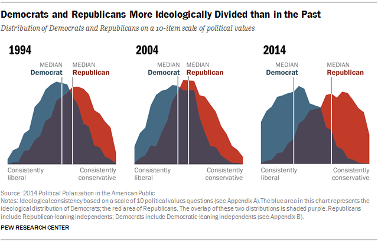
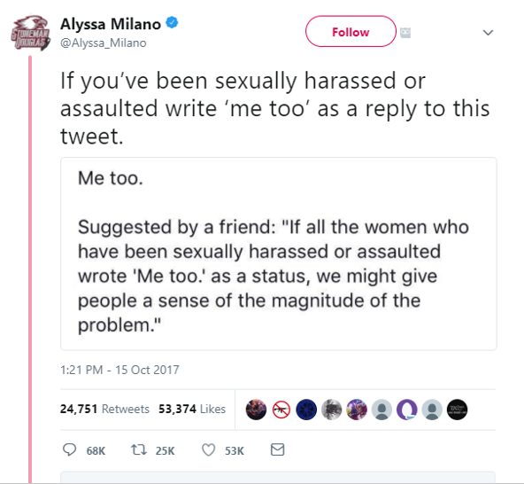

Oamenii moderni sunt progrsiv mai polarizati din tate punctele de vedere socio-economice, datorită "bulelor" de opinie în cadrul rețelelor sociale anumte opinii care într-un mediu ideologic heterogen nu ar avea șanse de propagare, idei de la mică conspirație a "grupurilor de masoni" la gang stalking, la conspiratii inofensize, opinii ale personaleor care nu au avut ocazia de a se educa în profunzime( sau au refuzat) precum "teoria" pămantului plat.
Aceste opinii au fost propagate prin rețele de sociale online care permit fiecărui utilizator sa transmita orice mesaj indiferent de intenție, credibilitate sau cunoștiinte, creând un haos de ideii le fiecare interacțiune între două bule de gândire care se contrazic
Influența facebook (și twitter) în politica și legislatura modernă
Rețelele sociale unesc oamenii în feluri de neimaginat chiar si în urma cu 50 de ani, acestea adună oameni din toate colțurile lumii și îi unește conform ideilor si idealurilor comune. Chiar dacă la primă observare această metoda de grupare pare periculoasă, ducând la gândire de grup si la limitarea exlorarii și extinderii de cunoaștere în afara bulei, din punct de vedere psihologic aceasta este cea mai bună metoda de a creea utilizatori care să fie din ce în ca mai conectați la o specifică retea socială, crescând profiturile companiei care deține rețeaua socială. creșterea profiturilor pe baza reclamelor din ce în ce mai bine plasate este o sabie cu două tăișuri, putând tintii doar persoane cu un oarecare interes în obiectul la care se face reclamă, dar poate fii folosit și ca metoda de a monitoriza acțiuniilee oamnilor pe aceste rețele, dar și oriunde pe internet.
Vocea anonimă care strigă în mulțime
Chiar și cu toate lucrurile negatve, și până și in polarizarea continuuă rețelele sociale pot fii o forta a binelui, acestea putând unii, pe lângă conspiraaționiști, oameni cu o cauză bună, prin actiune lor protejând oameni, pedepsind vinovați și ajutând victime.
Spre exemplu, #MeToo, este o mișcare socială împotriva abuzurilor sexuale și a hărțuirii sexuale în care oamenii publică acuzațiile de infracțiuni sexuale. Expresia „MeToo”(trad. și eu) a fost folosită inițial în acest context pe rețelele de socializare în 2006, pe Myspace, de către supraviețuitoarea și activistă a hărțuirii sexuale Tarana Burke.
Aceste campanii au avut rezultate impresionante precum:
Casele se stat din California, Illinois, Oregon și Rhode Island au răspuns acuzațiilor de hărțuire sexuală apărute în campanie, și mai multe femei din politică au vorbit despre experiențele lor de hărțuire sexuală, inclusiv senatorii SUA Heidi Heitkamp, Mazie Hirono, Claire McCaskill și Elizabeth Warren. Congresmana Jackie Speier a introdus un proiect de lege menit să faciliteze raportarea plângerilor de hărțuire sexuală pe Capitol Hill. Acuzațiile din lumea politicii spaniole au fost publicate și în mass-media, iar o serie de acuzații și cercetări asupra deputaților și personalităților politice cu privire la incorectitudinea sexuală au devenit un scandal la nivel național în 2017; această cercetare a fost întreprinsă în urma scandalului Weinstein și a mișcării MeToo
Majoritatea silențioasă
Dar această putere pote fi folosită in aceeași valoare pentru a perpetua dezinformare. Spre exemplu, rețeaua de socializare "Facebook" (cunoscută printre altele pentru vânzarea de date cu caracter personal ale utilizatoriol câtre cumparatori cu interese obscure), folosind reclame bine țintite câtre utilizatori specifici, a reușit să dezinformeze oamenii cu referire la o miriadă de factoide cu influență socială ridicată, acesta fiind considerat un motiv pentru care Donald J. Trump(twice impeached/ acuzat de doua ori) a reușit să ocupe poziția de președinte al SUA
Chiar și în această situație totuși societatea reuseste sa progreseze continuu, și de aceea trebuie să ne luptâm pentru un viitor mai bun